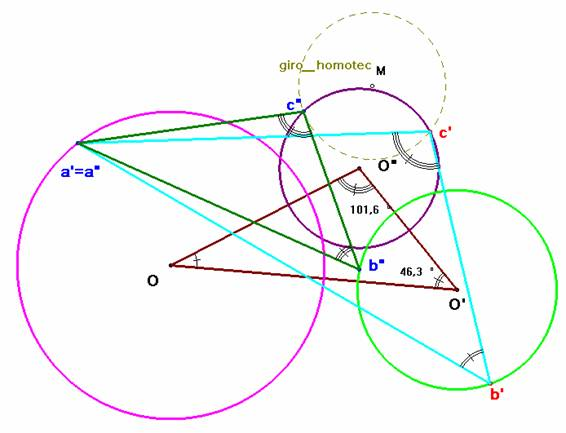

De
investigación
Propuesto
por José María Pedret Ingeniero Naval. (Esplugas de Llobregat)
Problema 286.-
En 1937, la Librairie de l’Enseignement Technique
Léon Eyrolles en su colección
LES MATHÉMATIQUES pour l’enseignement secondaire
publicó de los autores
G. ILIOVICI ET P. ROBERT
la siguiente obra
GÉOMÉTRIE
à l’usage des élèves de la classe
de Mathématiques, des Candidats aux grandes Écoles (Saint-Cyr, Institut
Agronomique, etc...) et des élèves des Écoles normales supérieures de
l’Enseignement primaire.
Esta,
obra publicada en un solo volumen está dividida en dos partes, una parte
teórica y una parte de problemas. Cada parte está dividida en dos libros. El
libro I que lleva por subtítulo T TRANSFORMACIONES y el libro II que lleva por
título CÓNICAS.
Los problemas están catalogados en tres tipos. Tipo A para los ejercicios
elementales y fáciles, tipo B para aquellos cuya dificultad es más grandes, y
tipo C para los problemas catalogados como los más difíciles.
ILIOVICI Y ROBERT, en la parte de problemas del Libro I y para el capítulo IV, Homotecia
y semejanza, proponen, con el número 73, el siguiente enunciado que
califican como tipo A:
Dados
tres círculos de centros O, O’, O”, construir un triángulo semejante al
triángulo OO’O” cuyos vértices estén,
respectivamente, sobre los tres círculos dados.
Julius Petersen, en su obra (MÉTHODES ET THÉORIES POUR LA RÉSOLUTION DES
PROBLÈMES DE CONSTRUCTIONS GÉOMÉTRIQUES. GAUTHIER-VILLARS. PARIS 1880), propone, con el número
382, un enunciado más restringido en el que sólo exige que el triángulo sea
congruente.
Juan Sapiña, en su obra (PROBLEMAS GRÁFICOS DE GEOMETRÍA.
LITOGRAF. MADRID 1965), propone, con el número 371, un enunciado más
restringido en el que sólo exige que el triángulo sea homotético
(de lados paralelos).
Resolvamos el problema general.
ILIOVICI, G. y ROBERT. P.(1937)
GÉOMÉTRIE. LÉON EYROLLES, ÉDITEUR. PARIS(PROBLEMA 72)
Solución
de Saturnino Campo Ruiz, profesor del IES Fray Luis de León de Salamanca.
.-
Este problema es análogo al problema
nº 99 de esta revista donde se pedía la construcción de un triángulo semejante a uno dado y cuyos vértices estén
en tres paralelas dadas. 
De forma similar, si suponemos el problema resuelto,
esto es, si tenemos construido el triángulo solución a’b’c’ observamos que elegido un vértice, por ejemplo a’ sobre la circunferencia de centro O como homólogo de este punto, un giro
con centro en ‘el y ángulo O’OO” lleva el
lado a’b’ sobre el lado a’c’. Para conseguir que sea exactamente a’c’ hemos de multiplicar por la razón . De aquí se deduce el procedimiento para la construcción.
Tomamos sobre la circunferencia O un punto a’ cualquiera.
A la circunferencia O’ (en la que se
apoyará b’) se le aplica un giro de centro a’
y amplitud el ángulo en O seguido
de una homotecia de razón . El vértice c’ se encuentra en esta circunferencia así como en la que tiene por
centro O”. Hay dos puntos de
intersección, que nos dan dos soluciones, una vez fijado el primer vértice.
Si el punto a’
se toma como homólogo de otro vértice, O’
u O” habrá otro par de soluciones
en cada caso: 6 en total una vez fijado a’.
Como se puede observar, si en lugar de tres
circunferencias se dan otras tres curvas, la construcción con mayor o menor
dificultad técnica es la misma.